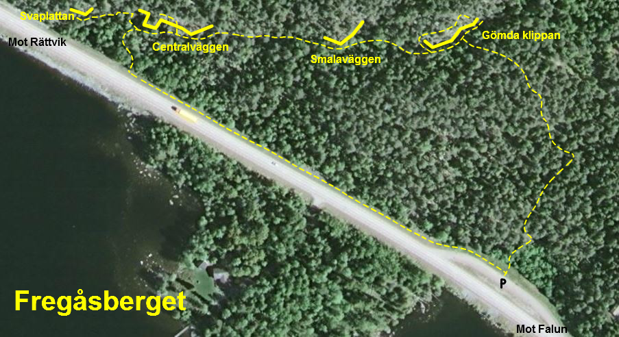
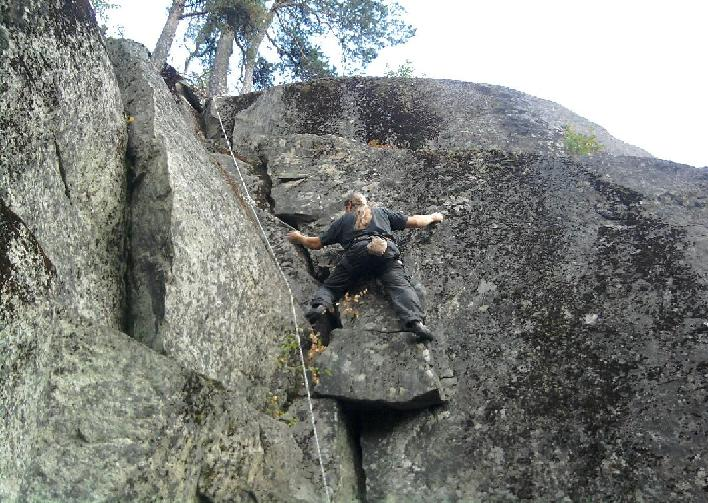
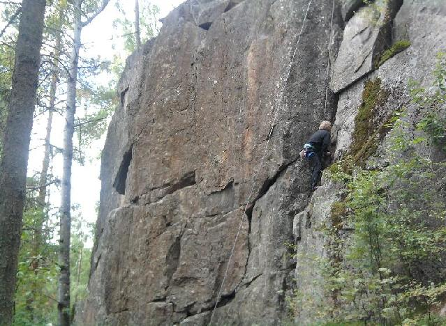

Fregåsberget
Allmänt
Vid Rällsjön mellan Falun och Rättvik ligger Fregåsberget. Klättringen på berget sker på ett antal olika klippor av vilka Centralväggen kan skymtas inne i skogen vid den östra sidan av riksväg 69 när man passerar. Klipporna är ca: 15m vid högsta klätterbara delen och berget bjuder på en blandning av sport, trad och mixade turer. Bergets ca. 50 leder erbjuder varierande klättring på olika sprickor, svaer eller branta bultsäkrade väggar och stenen är av god kvalitet. Det finns även ett antal större stenar utspridda i skogen med olika boulderproblem. Miljön är trivsamt, dock kan trafikljud ibland irriterar vid de klipporna som ligger närmaste riksvägen. Närmaste mat finns i Bjursås medan i Falun eller Rättvik finner man större matvarubutiker och Kaféer. Badar kan man göra i Rällsjön eller någon av de många andra sjöarna i området. Med rolig och utmanande klättring i ett trivsamt miljö är ett besök vid Fregås alltid en trevlig upplevelse. Kom ihåg att alltid uppträder respektfullt i möten med markägare och allmänheten. Ta även med er all skräp när ni lämnar klippan.
Vägbeskrivning
Från Falun, ta riksväg 69 mot Rättvik. Parkera vid den stora rastplatsen på höger sidan om vägen ca. 6,5km efter Bjursås. Följer därefter stigen till önskad klippa. Stigen till Gömdaklippan börjar i ungefär mitten av parkeringsplatsen, bredvid en kort stålpinne som markerar en nedgrävd elledning.
Översiktskarta

Utrustning och Graderingar
Klättringen på Fregåsberget kräver endast en standard svensk-rack bestående av ett antal slingor av diverse längder, 10 quickdraws och en uppsättning kilar och cams (i ledbeskrivningarna används SLCD’s som fökortning för self loading camming devices eller cams). Som graderingssystem används den skandinaviska gradskalan, 1-9+ med bergets svåraste led i skrivande stund grad 8+. Graderingen gäller den svåraste passagen på leden. Varianter är graderade efter sin självständiga dels svåraste passage.
Leder
Lederna beskrivs från vänster till högre betraktat nerifrån.
Svaplattan
Se översiktskartan för placering och vägbeskrivning. I dagsläget saknas en detaljerad skiss för denna klippa.
- 1
- Svaplattan
- 6-
- Det tydliga svaet längst till vänster. Kilsäkrad.
- 2
- F2
- 4
- Kort kilsäkrad spricka till vänster om stora väggen.
Centralväggen
Centralväggen är Fregåsbergets högsta klippa. Här finns det vid skrivande stunden ca. 23 leder av hög kvalitet i olika svårigheter och stiler. Miljön är trivsamt, dock kan trafikbuller ibland vara irriterande. Se översiktskartan för placering och vägbeskrivning. I dagsläget saknas en detaljerad skiss för denna klippa.
- 4
- Dallermage
- 3+
- Kort spricka och sva 5m till vänster om ''Craig’s crack''. Starta längst ner till vänster.
- 6
- Fin lir
- 6
- Flakesystemet på svaet 2m till vänster om'' Craig’s crack''. Små kilar. Saves the best till last.
- 7
- Craig's crack
- 4+
- Stora sprickan I hörnet längst till vänster bakom bautablocket. Kilar och SLCDs.

Curlie crankin hard på
Craig's crack
. Foto: Rikard Borres
- 8
- Bodil
- 7
- Skiffersva 1,5m till höger om ''Bodil''. Nya bultar 2008(?). Ursprungligen klättrad endast med bladbulten och en borrbult. Delar firningsankare med ''Powerslave''.
- 9
- Powerslave
- 7+
- Den branta bultade areten 3m till höger om ''Craig’s crack''. Firningsankare.
- 10
- Orange Mekanik
- 7-
- Den tydliga laybacksprickan 3m till höger om ''Powerslave''. Två möjliga utsteg. Alt. 1: följer vänster sprickan till Rappelfästet för ''Powerslave'' (7-). Alt. 2: Ta höger sprickan ovanför hyllan (6).
- 11
- Mekhong
- 6+
- Något krystad andra hälft. Börja 1m till höger om ''Orange Mekanik''. Följa bultlinjen uppför svaet och vidare mitt emellan de två alternativa utstegen till ''Orange mekanik''. 4 bultar och firningsankare.
- 12
- Pointbreak
- 7-
- Hörnsprickan 2m till vänster om ''Dick''. Upp igenom lilla taket. Följer sedan den tunna sprickan vidare förbi 2 bultar till toppen. 2 bultar + kilar och SLCD’s.
- 13
- Dick
- 6+
- Den lilla sprickan 1m till vänster om stora arete’n. Klättra upp runt hörnet och sedan vidare via sprickan i övre väggen. 1 bult + kilar, SLCD’s.
- 14
- Min blodiga kamp
- 8-
- Klättra första delen av ''Dick''. Följ sedan areten hela vägen till toppen. Direktstarten 8.
- 15
- Axa
- 8-
- Insteg vid stora grottan. Den vänstra av de 2 lederna ovanför grottan. Bultar och firningsankare.
- 16
- Hellracer
- 8-
- Som ''Axa'' men hela vägen till toppen.
- 17
- Pokerface
- 7-
- Den vänstra av de 3 lederna på väggen till vänster om ''Stora klöften''. 5 bultar och firningsankare.
- 18
- Äss i armen
- 6+
- Mitterst av de 3 lederna på väggen till vänster om ''Stora klöften''. 2 bultar och firningsankare.
- 19
- Kåk
- 6
- Börja 2m till vänster om ''Stora klöften''. 3 bultar och kilar. Firningsankare.
- 20
- Stora klöften
- 4+
- Tydliga dieder och spricksystemet. Äldsta leden på klippan. Firningsankare.

Ulf bränner av
Stora klöften
. Foto: Rikard Borres
- 21
- Clownerna på berget
- 7+
- Börja vid svaet ovanför blocket till höger om ''Stora klöften''. Klättra uppför svaet och vidare genom taket till toppen. Bultar plus en stor kil för slutet. Variant: avslut till höger efter taket.
- 22
- Hallick
- 7+
- Börja 3m till höger om ''Clownerna på berget''. Klättra upp till taket, traversera sedan till vänster och upp till firningsankare. Bultar.
- 23
- Torsk
- 7
- Börja som för ''Hallick'', sedan rakt upp till firningsankaret. Bultar.
- 24
- Lilltorsken
- 5+
- Börja 2m till höger om ''Hallick''. Väggklättring med bultar. Använd trädet som firningsankare.
- 25
- K2
- 4-
- Breda sprickan/skorsten till höger om ''Lilltorsken''. Kilar och SLCD’s.
- 26
- Styrkelyft
- 7-
- Bultade boulderproblemet 15m till höger om ''K2'', strax innan hörnet. En bult.
- 27
- Öppet projekt
- ?
- Bultade linjen 20m till höger om ''Styrkelyft''.
Siam-stenen
Siam- stenen är det fristående pyramid-liknandeblocket nedanför stora grottan. Här finns det 2 bultade leder.
- 28
- Singapore
- 7-
- Vänstra leden på stenen. Bultar och firningsankare.
- 29
- Siam
- 7
- Högra leden på stenen. Bultar och firningsankare.
På en svaplatta cirka 15m till höger om Siam-stenen finns ytteliggare en kort fristående led.
- 30
- Rödtjut
- 6
- Ett brant insteg leder till en svaplatta. 2 bultar.
Smalaväggen
Se översiktskartan för placering och vägbeskrivning. I dagsläget saknas en detaljerad skiss för denna klippa.
- 31
- Drängfull
- 6
- Längst till vänster på hörnet. Bultar
- 32
- Gaddad galning
- 6+
- I mitten. Bultar
- 33
- Anders kamp
- 6
- Kanten till höger. Bultar
Gömdaklippan
En mycket trevlig liten klippväg som ligger lugnt och avskilt uppe i skogen. Lederna här är generellt kortare än vid centralväggen, dock saknas trafikljud vilket gör miljön mycket trivsam. I dagsläget finns det 17 leder här inklusive Mattias Flodins
Jag hatar mig själv och jag vill dö
8+, bergets svåraste led.

- 34
- Dogshit flake
- 4
- Korta hörnet till vänster om ''Motorsågsmassakern''. Start som för ''Motorsågsmassakern'', kliv åt vänster och följ flaken och sprickan till toppen. 5 bonuspoäng för direktstarten! (Syns ej på bilden).
- 35
- Motorsågsmassakern
- 5-
- Start 5m till vänster om ''Flink och Qvick''. 2 bultar.
- 36
- Flink och Qvick
- 7
- Kilsäkradesprickan.
- 37
- The plagiarist
- 7-
- Rolig! Börjar 2m till höger om ''Flink och Qvick''. Klättra väggen alldeles till höger om sprickan (använd inte sprickan!). Delar firningsankare med ''2 för 1''.
- 38
- 2 för 1
- 5+
- Two routes for the price of one! Härlig väggklättring. Måste göras! 5+ om man klättrar på höger sida om bultarna och 6+ om man klättrar till vänster om bultarna. 5 bultar. Firningsankare.

Spot-Squad send-fest på
2 för 1
.
- 39
- Jonas symaskin
- 5
- Öppenbara kilsäkrade diedern och efterföljande spricksystemet. Delar firningsankare med ''Jag hatar mig själv och jag vill dö''. Kan även avslutas till vänster och delar då firningsankare med ''2 för 1''.
- 40
- Jag hatar mig själv och jag vill dö
- 8+
- Starta 2m till höger om ''Jonas symaskin''. Klättra ut genom taket, sedan väggklättring efter bultarna. Firningsankare.
- 41
- Captain snakepants
- 7+/8-
- Starta 1m till vänster om ''Knashög''. Upp genom det lilla taket, sedan vidare via 2 bultar och sprickorna till toppen. Utsteg via vänster sprickan. 2 bultar + små SLCD´s eller kilar. Använd trädet som firningsankare.
- 42
- Knashög
- 6+
- Korta kilsäkrade sprickan 5m till höger om ''Jag hatar mig själv och jag vill dö''. Häftig klättring. Kilar och SLCD’s. Delar ankare med ''Tokspeedad''.
- 43
- Tokspeedad
- 7-
- Klättra första delen på ''Knashög'', sedan utsteg via sprickan till höger. Kilar och SLCD’s. Delar ankare med ''Knashög''.

- 44
- Salo
- 7-
- Korta och branta borrbultslinjen 3m till höger om ''Knashög''. 2 bultar.
- 45
- Livet är pest- fyllan värmer bäst
- 6
- Tydliga borrbultslinjen i klykan 2m till vänster om ''Nudist 1''. Följer linjen rakt upp till rappellfästet på övreblocket. 2 bultar + SLCD’s för den svaghjärtade.
- 46
- Nudist 1
- 4
- Sprickan och svaplattan till vänster om ''The knife''. Kilar/ SLCD’s och en bult på övre svaplattan. Delar ankare med ''The knife''.
- 47
- The knife
- 6-
- Klättra väggen och vänsterkanten på blocket. 2 bultar. En välplacerad kil vid utsteget kan motverka potentiell kalsongtvätt.
- 48
- Öppen projekt
- ?
- Något krystat men rolig. Väggklättring på högersidan av blocket. Börja 2m till höger om ''The knife''. Undvik kanten och sprickan till höger! Förbi första bulten, genom taket och vidare. 3 bultar.
- 49
- Nudist 2
- 4
- Sprickan 1m till höger om Öppet projektet. Kilar och SLCD´s.
Följande leder finns på en vägg 20m till höger om The knife blocket:
- 50
- Pillar of doom
- 5+
- Börjar på marken mellan blocket och den fristående pelaren. Klättra upp på pelaren och sedan vidare efter bultarna. 5+ om man traverserar vänster efter tredje bulten och 6+ om man klättrar rakt upp. 4 bultar och ankare bestående av 2 bultar. (Syns ej på bilden).
- 51
- Projekt Anders Wester
- ?
- Klättra högra sidan av areten. Bult. (Syns ej på bilden).
kategori:Saknar skiss
kategori:Saknar koordinater
Category:Dalarna
Copyright (C) Permission is granted to copy, distribute and/or modify this document under the terms of the GNU Free Documentation License, Version 1.3